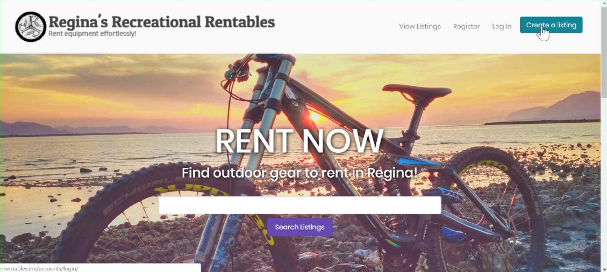
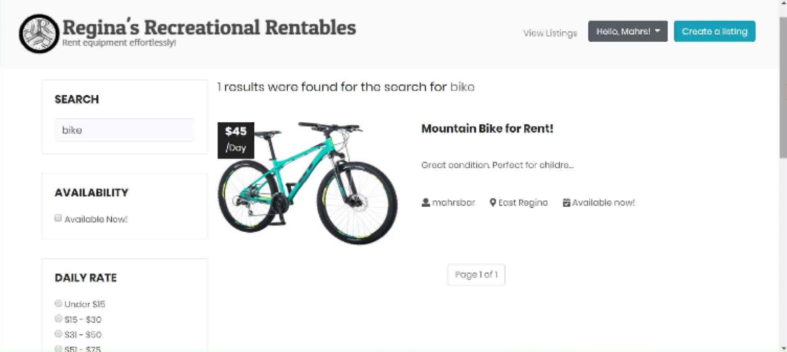
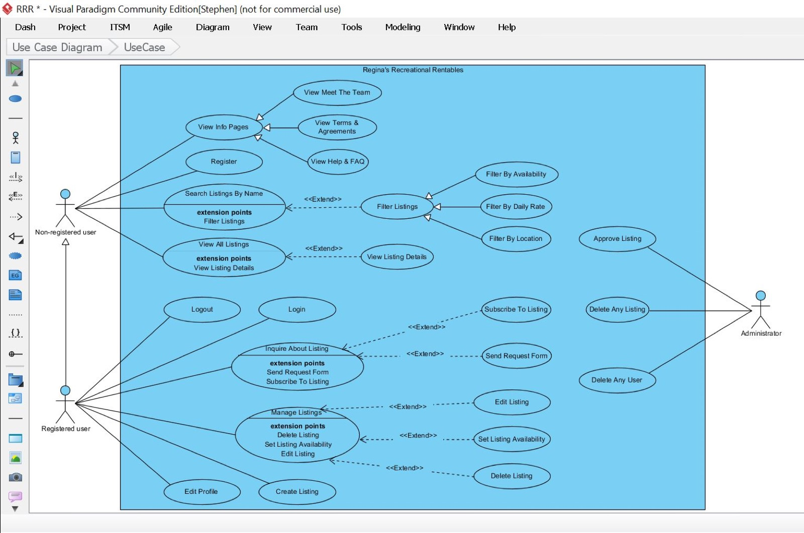
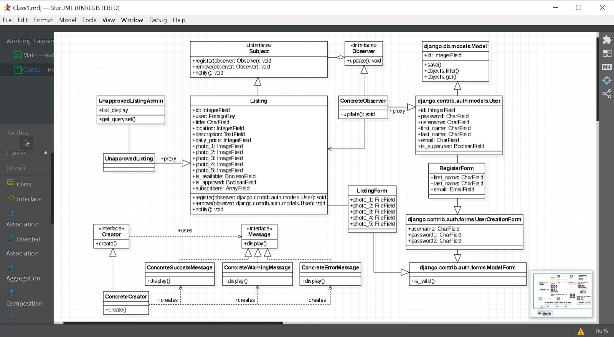
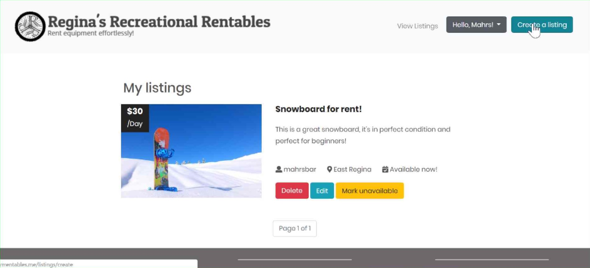

Earlier work · University software project
Regina's Recreational Rentables
A sports-equipment rental site for Regina, built by three of us in a semester. Owners list gear, renters search and filter, an admin approves every listing, and a subscribe button emails you the moment something you want becomes available.
- 3 people, one semesterSoftware engineering course
- Admin-approved listingsNothing goes live unreviewed
- Availability alertsObserver pattern emails subscribers
Regina had no way to rent sports gear between neighbours.
Led the feasibility study and front end; designed search, filters and the subscribe flow; ran acceptance testing.
A working Django site with admin approval and availability emails, shaped decision by decision by the competitive study.

Home: one job, one search bar
Results with availability, rate, and zone filtersThe problem
The brief: owners list gear with photos, prices and availability; renters browse, filter and get in touch. Anyone can browse, registered users can list and contact, and an admin approves every listing before it goes live.
Staying local was deliberate. A city-sized marketplace can promise what a global one can't: every listing is nearby, payment happens in person, and a person approves what appears.
Feasibility: what the existing options got wrong
I led the competitive study against two established peer-rental services. It's the part I'm still proudest of: it turned "we're building a rental site" into specific decisions.
| Dimension | Existing services | Our decision |
|---|---|---|
| Access | One was iPhone-only and required an account just to browse | Browse without an account, on any device |
| Listings | One item per listing | Multiple items per listing (several skate sizes in one post) |
| Interface | Overlapping images, dull palette, map-first navigation that added clutter | Grid layout, minimal, core tasks visible on the home page |
| Robustness | Developer errors visible to users; passwords emailed in plain text; posters' addresses shown by default | Validation on every form, sanitised input, approximate location only |
| Fees and payment | 10 to 17.5% commission, card required | No fee; the site connects people and stays out of the transaction |
| Follow-up | None | Subscribe to an unavailable listing and get emailed when it frees up |
The Zeigarnik effect
Unfinished tasks nag at us until they're closed. A kayak marked "unavailable" is an open loop, and the subscribe button closes it in one click.
Zeigarnik, B. (1927). Über das Behalten von erledigten und unerledigten Handlungen.Architecture and patterns
Django's Model-View-Template structure let three people work on separate sub-apps (listings, accounts) without stepping on each other, which mattered most with a semester deadline. We used two design patterns:
- Factory method for messages. Success, error and warning messages each have their own styling and copy; a creator class builds the right one from a context string, so every view speaks to users the same way.
- Observer for availability. A listing is the subject and its subscribers are observers. When the owner marks it available, every subscriber gets an email and the owner sees who was notified. The pattern, rather than a plain mail call, leaves room for a logging or analytics observer later.

Use cases for non-registered, registered, and admin users
Class diagram: Observer on Listing and User, Factory for messages
Quality, tested
We wrote the software qualities down before building (correctness, time efficiency, robustness, user friendliness), then tested against them: five functional cases, five robustness cases with bad input (short descriptions, wrong file types, duplicate usernames, non-admins on admin routes), and page-speed checks on the five most-used pages.
User friendliness came with a scenario: a renter who can't find the contact form gives up, and the owner loses a rental. That sentence decided where the request form sits on the listing page.
What it taught me
- The competitive study paid off. Every row in that table became a decision we could defend.
- Write the qualities as user scenarios. "Must be user friendly" is noise. "A renter who can't find the form gives up" is a requirement.
- Trust mattered more than features. Admin approval and no-fee, off-platform payment were what made a stranger-to-stranger marketplace feel safe in a small city.